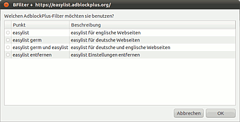

Adblock-Plus-Liste
Archivierte Anleitung
Dieser Artikel wurde archiviert, da er - oder Teile daraus - nur noch unter einer älteren Ubuntu-Version nutzbar ist. Diese Anleitung wird vom Wiki-Team weder auf Richtigkeit überprüft noch anderweitig gepflegt. Zusätzlich wurde der Artikel für weitere Änderungen gesperrt.
Zum Verständnis dieses Artikels sind folgende Seiten hilfreich:
In BFilter können eigene Filterregeln in der Datei ~/.urls.local hinzugefügt werden, um die Treffsicherheit der Filterung zu erhöhen oder um Ausnahmen zu erstellen. Diese Möglichkeit kann auch genutzt werden, um Regeln aus Adblock Plus-Listen hinzuzufügen.
Das Skript bfilter_adblock_plus soll dabei helfen, solch eine Liste automatisch im Hintergrund generieren zu lassen und aktuell zu halten.
Einrichten¶
Zuerst muss man das passende Archiv, das das Skript enthält, herunterladen und in einen beliebigen Ordner entpacken[1]:
|  |
| Auswahldialog |
Für Ubuntu (GNOME): GTK_bfilter_adblock_plus.tar.gz

Für Kubuntu (KDE): KDE_bfilter_adblock_plus.tar.gz
Anschließend muss die Datei bfilter_adblock_plus ausführbar gemacht[2] und gestartet[3] werden.
Das Skript erstellt nach einer Auswahl der zu verwendenden Adblock-Plus-Liste/n drei Dateien im Ordner /opt und macht sie ausführbar. Danach wird vorgeschlagen, eine erste Aktualisierung durchzuführen.
Entfernen¶
Im letzten Menüpunkt im Auswahlfenster steht die Option: "easylist entfernen". Dieser Menüpunkt entfernt alle drei erstellten Skripte aus /opt und stellt urls.local ohne die Adblock-Plus-Liste wieder her.
Funktionen der Skripte¶
Das Skript /opt/bfiltadb_update dient zur Überprüfung der Liste/n anhand der Checksummen auf neue Versionen. Es wird eine Verbindung zum Server hergestellt, bei Fehlern erfolgt ein erneuter Versuch nach 2 Minuten. Mit diesem Skript werden unten stehende Skripten bei Änderung der Liste/n ausgeführt.
/opt/bfilterUpdateLists enthält das Skript zum Aktualisieren der Liste/n in urls.local. urls.local wird in der Datei urls.local.save gesichert. Die Sicherung erfolgt ab der Zeile
#List of all supported TAGS:
Eigene Änderungen sollten daher unterhalb dieser Zeile hinzugefügt werden, am einfachsten nach der letzten Zeile.
Das Skript fragt beim Ausführen immer nach, ob eine Aktualisierung durchgeführt werden soll. Nach erfolgreicher Aktualisierung wird BFilter neu gestartet. Falls keine Verbindung zum Server hergestellt werden kann, wird der Benutzer gefragt, ob ein erneuter Versuch unternommen oder abgebrochen werden soll.
Die Aktualisierung erfolgt mit Hilfe von /opt/adblock2bfilter.pl. Dies ist ein Perl-Skript zum Konvertieren der Adblock-Plus-Liste/n in Reguläre Ausdrücke für BFilter.
Automatisches Update beim Systemstart¶
Um beim Systemstart die Aktualität der Adblock-Plus-Liste zu überprüfen und ggf. zu aktualisieren, kann /opt/bfiltadb_update dem Autostart[4] hinzugefügt werden.


- Erstellt mit Inyoka
-
 2004 – 2017 ubuntuusers.de • Einige Rechte vorbehalten
2004 – 2017 ubuntuusers.de • Einige Rechte vorbehalten
Lizenz • Kontakt • Datenschutz • Impressum • Serverstatus -
Serverhousing gespendet von